Six proposed character keys, planned against the selected source interval.
DRAFT RASTER KEYS · MOTION NOT APPROVEDThese are draft key proposals. An assembled review copy is now available above. The isolated drafts below are retained as revision evidence. Still-key approval and normal-speed playback approval are separate. No training ran.
Open the assembled review copy and synchronized source comparison →
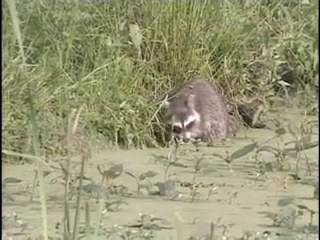
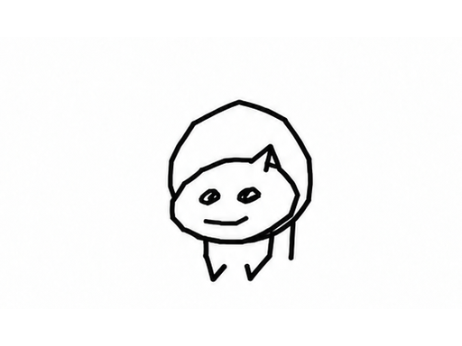
Frontal head upright
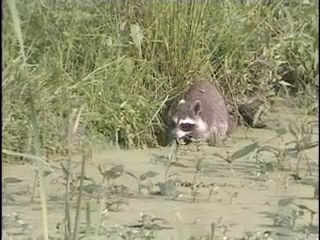
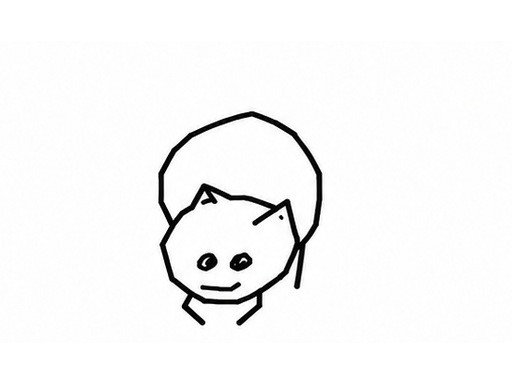
Frontal head dropping
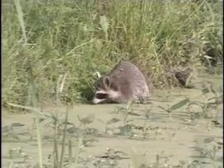
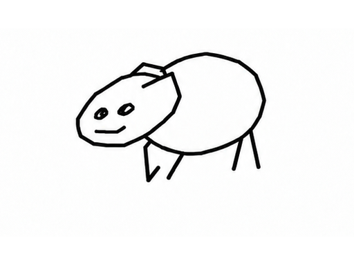
Three-quarter left, muzzle low
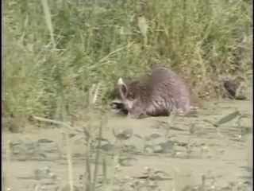
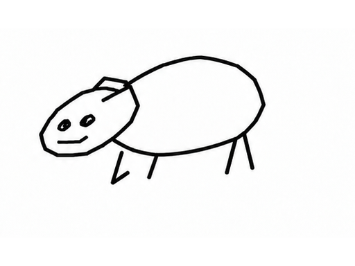
Forward reach as body turns left
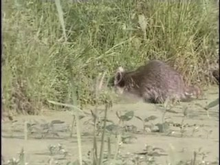
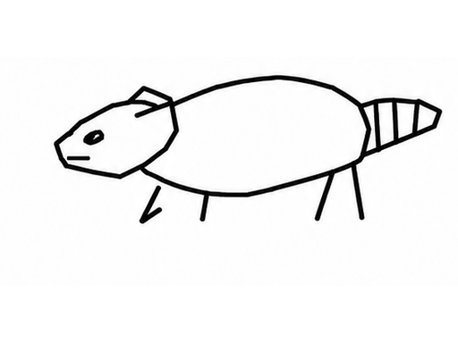
Left side, head low
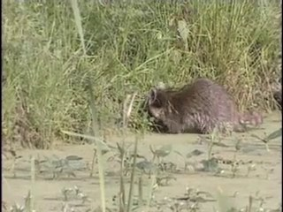
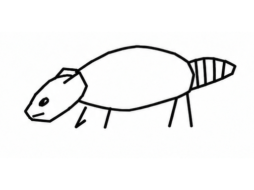
Low foraging hold
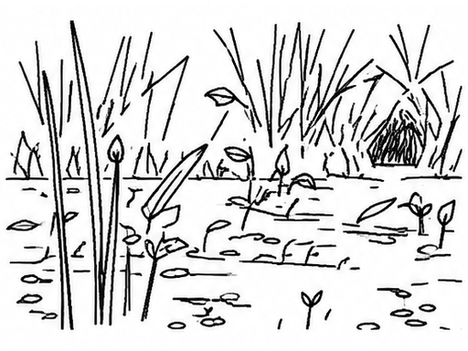
keys/bg-plate.png
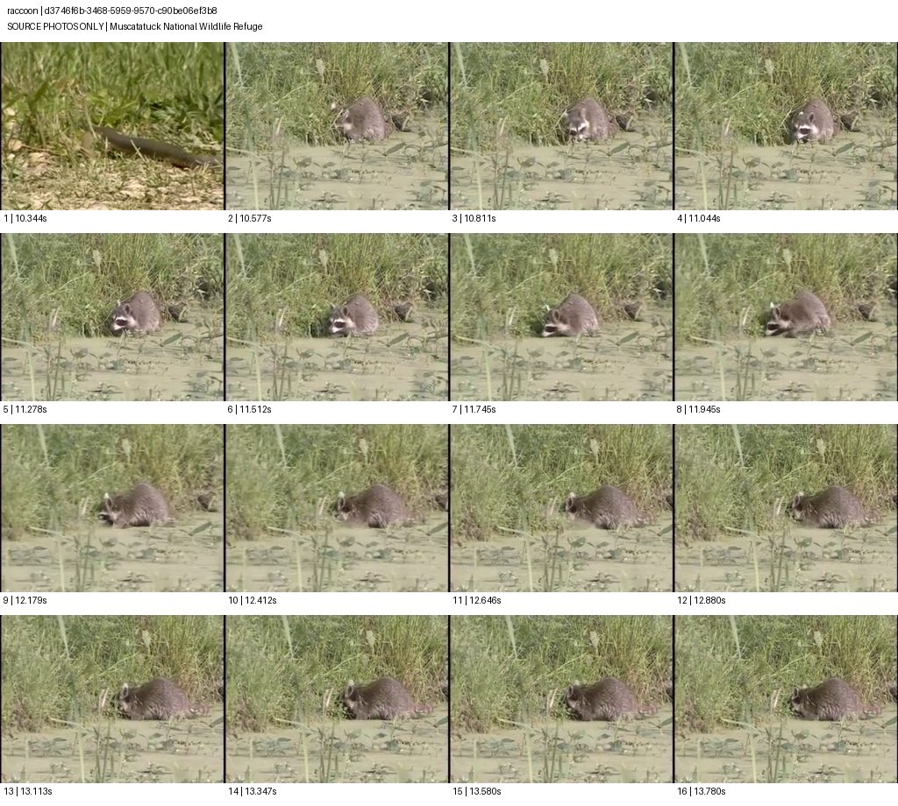
Muscatatuck National Wildlife Refuge · 10.811 s – 13.58 s
{
"rank": "3",
"score": "0.274504",
"clip_id": "d3746f6b-3468-5959-9570-c90be06ef3b8",
"source_title": "Muscatatuck National Wildlife Refuge",
"source_year": "2005",
"start_seconds": "564.631",
"end_seconds": "578.512",
"duration_seconds": "13.881",
"color_mode": "color",
"aspect_ratio": "4:3",
"page_url": "https://www.movingimagearchive.com/sources/muscatatuck-national-wildlife-refuge-5857854b?clip=d3746f6b-3468-5959-9570-c90be06ef3b8",
"thumbnail_url": "https://pub-075ff01374c04555b51c9bc50f258b42.r2.dev/sources/5857854b-b67d-5388-8b29-3fd017bdf156/v4-conditional-luna-1/thumbnails/d3746f6b-3468-5959-9570-c90be06ef3b8.jpg",
"video_url": "https://pub-075ff01374c04555b51c9bc50f258b42.r2.dev/sources/5857854b-b67d-5388-8b29-3fd017bdf156/v4-conditional-luna-1/clips/d3746f6b-3468-5959-9570-c90be06ef3b8.mp4",
"source_id": "5857854b-b67d-5388-8b29-3fd017bdf156",
"interval_seconds": [
10.810810811,
13.580246914
],
"time_basis": "clip_relative_seconds",
"film_interval_seconds": [
575.441810811,
578.211246914
],
"rights": {
"reported": null,
"status": "not provided in candidate manifest; unverified"
},
"why_this_clip": "Tail and feet are partly occluded; contacts and hidden contours remain unverified.",
"sampled_continuity": "No cut visible in retained sampled window; continuous playback not approved.",
"source_sha256": "64d78b2ddacfdf8356d36c102e51f8708ef0f1eefc3ff4e81c426ae8376129c2",
"fps": 29.97,
"source_review": "source-review/selected/d3746f6b-3468-5959-9570-c90be06ef3b8-16frames.jpg",
"source_approved": false,
"source_kind": "archive footage",
"motion_approved": false,
"train_eligible": false
}